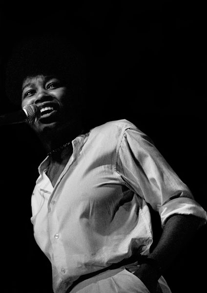

Bienvenidos a
Síguenos en nuestras redes sociales :


 Joan Armatrading nació en 1950 en Basseterre, en la isla caribeña de Saint Kitts, el tercero de seis hijos. Su padre era carpintero y su madre era ama de casa. Cuando tenía tres años, sus padres se mudaron con sus dos hijos mayores a Birmingham, Inglaterra, mientras que Joan fue enviada a vivir con su abuela en la isla caribeña de Antigua. A principios de 1958, a la edad de siete años, se unió a sus padres en Brookfields, entonces un distrito de Birmingham. El área ahora está en su mayoría demolida y ha sido absorbida en el distrito de Hockley. Su padre había tocado en una banda en su juventud, y luego le prohibió a sus hijos tocar la guitarra. Aproximadamente a la edad de 14 años, Armatrading comenzó a escribir canciones al poner música a sus propios limericks en un piano que su madre había comprado como "un mueble". Poco después, su madre le compró una guitarra de £ 3 (equivalente a £ 53 en 2016) en una casa de empeños a cambio de dos cochecitos, y la Armatrading más joven comenzó a enseñarse a sí misma el instrumento. Armatrading abandonó la escuela a la edad de 15 años para mantener a su familia, y ella perdió su primer trabajo como mecanógrafa y operador de comptómetro después de llevar su guitarra al trabajo y tocarla durante las pausas para el té.
Armatrading actuó por primera vez en un concierto en la Universidad de Birmingham para su hermano a la edad de aproximadamente 16 años. Ella solo conocía sus propias canciones, pero su hermano le pidió que interpretara algo que era familiar para la audiencia; Ella eligió "El sonido del silencio". Luego realizó sus propias canciones en el área local con un amigo de la escuela y tocó el bajo y la guitarra rítmica en los clubes locales. En 1968, Armatrading se unió a una producción de repertorio del escenario musical Hair. Allí conoció a la letrista Pam Nestor en 1970, y trabajaron juntos en el álbum debut de Armatrading Whatever's for Us, lanzado por Cube Records en 1972. Nestor escribió la letra de 11 de las 14 canciones del álbum. álbum, mientras que Armatrading escribió la letra de tres de ellos, tocó todas las voces, escribió toda la música y tocó una variedad de instrumentos en el álbum. Aunque Nestor fue reconocido como co-letrista, Cube consideraba que Armatrading era el material estrella más probable. Estos eventos produjeron una tensión que rompió la asociación. El 28 de noviembre de 1972, Armatrading apareció en el programa de la BBC Radio 1 John Peel con "Head Of The Table", "Pasa un poco de tiempo", "Child Star" y "Whatever for For Us". Ella cantaba y tocaba guitarra acústica y piano. En 1973, fue lanzado por el sello Cube on the Fly (catálogo: Bug 31) el primer single de Armatrading "Lonely Lady" (con letra de Nestor), una canción que no se había incluido en el álbum. No tuvo éxito en las listas y un período de inactividad para Armatrading continuó mientras se liberaba de su contrato con Cube Records. El sencillo fue posteriormente eliminado por Cube y reeditado como un sencillo promocional en los EE. UU. Para el nuevo sello A & M Records de Armatrading, el mismo año (como A & M1452). En enero de 1974 apareció nuevamente en el John Peel Show. Con "Some Sort Of Love Song", "Lonely Lady" y "Freedom", ella nuevamente cantó y tocó guitarra acústica y piano, pero estuvo acompañada por los músicos de apoyo Snowy White (guitarra), Mike Tomich (bajo) y Brian Glassock (batería). En 1975, Armatrading fue libre de firmar con A & M Records y lanzó el álbum Back to the Night, que se promocionó en una gira con el grupo de seis músicos de jazz-pop The Movies. Armatrading acreditó a la cantante inglesa Elkie Brooks en las notas del manga, ya que ella había cocinado para Armatrading y la banda en el estudio mientras hacían el álbum, que fue producido por el entonces marido de Brooks, Pete Gage. Un importante relanzamiento en 1976 y la participación del productor Glyn Johns impulsaron su próximo álbum, Joan Armatrading, al Top 20 y generaron el éxito Top 10 "Love and Affection". El álbum mezcló el trabajo acústico con material influenciado por el jazz, y este estilo se conservó para el seguimiento de 1977 Show Some Emotion, también producido por Glyn Johns, como en 1978, To the Limit. Estos álbumes incluyeron canciones que aún son instrumentales en los shows en vivo de Armatrading, que incluyen "Willow", "Down to Zero", "Tall in the Saddle" y "Kissin 'and a Huggin". También en este momento, Armatrading escribió e interpretó "El vuelo de los gansos salvajes", que se usó durante los títulos de apertura y cierre de la película de guerra de 1978 Los gansos salvajes. La canción se incluyó en el álbum de la banda sonora de la película, originalmente lanzado por A & M Records, más tarde lanzado bajo licencia como un DVD Cinephile. Un álbum en vivo titulado Steppin 'Out fue lanzado en 1979. Entre 1972 y 1976, Armatrading hizo un total de ocho apariciones en sesión para el show de John Peel y en la década se convirtió en el primer cantante / compositor británico británico en disfrutar del éxito internacional. Armatrading fue la invitada musical de la Temporada 2, episodio 21 de Saturday Night Live de NBC, que se emitió originalmente el 14 de mayo de 1977. Ella interpretó "Love and Affection" y "Down to Zero".
En 1980, Armatrading modificó radicalmente su estilo de juego y lanzó Me Myself I, un álbum más duro orientado al pop producido por Richard Gottehrer, que anteriormente había producido álbumes para Blondie. El álbum se convirtió en el álbum más alto de la historia de Armatrading, tanto en el Reino Unido como en los EE. UU., Mientras que la canción principal se convirtió en su segundo single Top 40 en el Reino Unido. En ese año, actuó en la noche de Rockpalast. El mismo estilo pop que en su álbum anterior, ahora combinado con sintetizadores, también fue evidente en el álbum de 1981 Walk Under Ladders y en The Key de 1983. Los tres de estos álbumes fueron éxitos del Top 10 en el Reino Unido, y The Key también produjo el exitoso single "Drop the Pilot", el tercer sencillo del Top 40 del Reino Unido de Armatrading (UK # 11). Para capitalizar su éxito, A&M lanzó el mejor álbum recopilatorio, Track Record en 1983. Armatrading actuó en 1985 en un concierto agotado en el Anfiteatro Red Rocks en Denver, y otro concierto en Arizona con Cook da Books. Ese año lanzó su próximo álbum, Secret Secrets. El álbum fue uno de los 20 mejores éxitos, pero no logró producir ningún sencillo, consolidando el estado de Armatrading como un "artista del álbum". Asumiendo las responsabilidades de producción, grabó los álbumes Sleight of Hand (1986), The Shouting Stage (1988) y Hearts and Flowers (1990) para A&M Records, todos los cuales llegaron al Top 40 del Reino Unido pero no lograron alcanzar el nivel de éxito comercial. de sus trabajos anteriores a pesar de exitosas giras nacionales (un programa de su gira "Shouting Stage" de 1988 también se filmó para televisión). En 1989 fue la invitada de Sue Lawley en el programa de radio de la BBC Radio 4, Desert Island Discs, donde su elección favorita fue "Madame George" de Van Morrison. La lista completa de Armatrading incluía a Ella Fitzgerald y Gustav Mahler. Su artículo de lujo era una guitarra, mientras que su libro de náufragos era ¿Por qué no le preguntaron a Evans? por Agatha Christie. En 1991, A&M lanzó la compilación The Very Best of Joan Armatrading, que la devolvió al Top 10. Sin embargo, su siguiente álbum de estudio para A&M, Square the Circle, de 1992, no replicó este éxito y sería su última grabación para el sello. Tras su partida de A&M, una etiqueta con la que había estado durante casi 20 años, Armatrading firmó con RCA para su álbum de 1995, What's Inside. A pesar de varias apariciones en televisión y una gira completa (que incluyó un cuarteto de cuerdas además de su banda de teatro), el álbum no fue un éxito comercial, convirtiéndose en su álbum de estudio más bajo en 20 años. En diciembre de 1998, lanzó Lullabies with a Difference, un álbum de canciones de cuna aportadas por ella y varios de sus artistas favoritos, en honor a PACES, una organización benéfica para niños con parálisis cerebral.
En 2003, ya no se adjunta a un sello importante, lanzó el álbum Lovers Speak. Aunque fue su primer álbum en ocho años, tuvo poco éxito comercial. En 2004, lanzó un álbum en vivo, Live: All the Way from America, que fue una grabación de un concierto de su gira Lovers Speak. Su álbum de 2007, Into the Blues, debutó en el número 1 en la lista Billboard Blues de EE. UU., Lo que convirtió a Armatrading en la primera artista femenina del Reino Unido en ganar esa distinción. Into the Blues, que Armatrading llamó "el CD que me había prometido a mí mismo escribir durante mucho tiempo", fue nominada a un Grammy Award, lo que la convirtió en la primera artista británica en ser nominada en la categoría de Grammy Blues. En 2007, Armatrading apareció en el Episodio 3 de la segunda serie de Live from Abbey Road con "Tall In The Saddle" de su álbum homónimo de 1976, y "Woman In Love" del álbum Into The Blues. También apareció en Later ... with Jools Holland, donde interpretó "Love and Affection", así como "Woman In Love" y "My Baby's Gone", ambas de su álbum Into The Blues de 2007. En 2008 formó parte del True Colors Tour 2008 de Cyndi Lauper. El 29 de marzo de 2010 lanzó un nuevo álbum, This Charming Life. El álbum alcanzó el puesto número 4 en la lista de álbumes de Billboard Folk de los Estados Unidos. Se embarcó en una gira internacional para promocionarla, y un concierto de esta gira en abril de 2010 en el Royal Albert Hall de Londres se lanzó en el CD / DVD en vivo en el Royal Albert Hall, junto con dos canciones de un concierto en Denver. , Colorado, EE. UU., En febrero de 2011. En 2012, lanzó el álbum Starlight. Armatrading siempre ha apoyado la música nueva y el talento local. Para su gira Starlight 2012, invitó a 56 cantantes, compositores y artistas a abrir para ella en sus respectivas ciudades de origen antes de que su gira principal apoye a Chris Wood. [28] Cada uno de los artistas que abrieron para ella en todo el Reino Unido también tuvo una canción seleccionada para una compilación de tres discos lanzada por su sello discográfico Hypertension Music. Presentó a Singer-Songwriters de Armatrading, una serie de dos partes de radio que muestra a estos artistas, que se emitió en BBC Radio Two en febrero de 2013. En 2014 y 2015, Armatrading se embarcó en su última gran gira, Me Myself I Tour, la primera en presentar su solo en el escenario. En 2016 se lanzó un álbum de CD / DVD, titulado Me Myself I World Tour. En 2016, la directora Phyllida Lloyd y Donmar Warehouse encargaron a Armatrading escribir la música para una producción totalmente femenina de The Tempest de William Shakespeare. Armatrading lanzó un álbum digital acompañante, The Tempest Songs. En 2018, firmó con BMG. Su primer álbum para el sello, Not Too Far Away, fue lanzado en mayo de 2018.